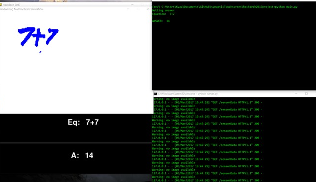
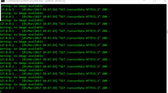
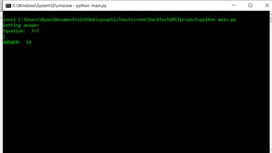

Development
This project utilized many different APIs: Synaptics Touchpad, Google Cloud Vision, and Wolfram Alpha. The program grabbed input from the touchpad as a multidimensional array, and saved an image of it. It then sent the image to Google Cloud Vision, which then used its massive neural network for image recognition to try to figure out what the numbers and symbols were. It created a string for the equation, which was then sent through Wolfram Alpha's API. Wolfram Alpha calculated the string, and return a large dictionary of data. The program sifted through the data to get the direct answer, and displays it. That is essentially what this project does and how it does it.

7 + 7 = 14
The first phase of the project is the touchpad. We hit some roadblocks with utilizing the touchpad early on. We had trouble getting input data from the touchpad, unless we pushed on the touchpad really hard. We eventually had the touchpad replaced, and found that our previous one was defective. You still had to press firmly on the touchpad, but it was much more natural now. We used the code given to us by Synaptic to grab the data, and then used that data to create an image.

The data from the Synaptics touchpad and image creation.
After the image was created, we sent that image through Google Cloud Vision's API via a custom wrapper we wrote. This part was our biggest headache. When we tested the equation detecting from Google Cloud Vision, we found that most of the time, it does not correctly detect the equation. When we put in 3 * 2 into the touchpad, we sometimes get weird responses. We initially thought that it was again the touchpad, but later realized that the neural network may not be optimized for numbers and equations (plus, our hand-writing was a bit poor). We wanted it to be able to detect complex equations like derivatives and integrals, but realized that it was simply out of our scope and capabilities at the moment (fun fact: some integrals did end up working). Once the neural network gave a response, we sent it to Wolfram Alpha.

Google Cloud Vision predicts that this happy face is an O.
Wolfram Alpha computed the equation and gave us all sorts of data. We looked specifically for just the answer, and displayed it.

The input data and output for Wolfram Alpha.
The UI was made using pygame, and it displayed what the touchpad captured, what the image looked like, what Google Cloud Vision thought the image was, and what Wolfram Alpha though the answer was.

Hey, sin was detected!